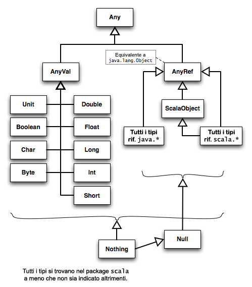

Voi siete qui: Inizio ‣ Programmare in Scala ‣
PredefPer vostra comodità, ogni volta che compilate un programma, il compilatore Scala importa automaticamente le definizioni contenute nel package java.lang (anche javac lo fa); sulla piattaforma .NET, importa il package system. Il compilatore importa anche le definizioni dell’analogo package di Scala, scala. Quindi, è possibile usare i tipi ordinari di Java e .NET senza importarli esplicitamente, e senza qualificarli completamente con il prefisso java.lang nel caso di Java. Similmente, un certo numero di tipi comuni specifici di Scala vengono resi disponibili senza qualificazione, come String. Quando i nomi di tipo in Java e in Scala si sovrappongono, come nel caso di List, la versione di Scala viene importata per ultima, quindi “prevale” sull’altra.
Il compilatore importa automaticamente anche l’oggetto Predef, che definisce o importa diversi tipi, oggetti e funzioni utili.
☞Potete imparare molte cose su Scala analizzando il codice sorgente di
Predef, che si può trovare nella pagina Scaladoc diPredefcliccando sul link “source”, oppure nel pacchetto completo dei sorgenti di Scala scaricabile dal sito del linguaggio [Scala].
Ecco una lista parziale degli elementi importati o definiti da Predef sulla piattaforma Java.
Tabella 7.1. Elementi importati o definiti da Predef.
Tipi |
|
Eccezioni |
|
Valori |
|
Oggetti |
|
Classi |
|
Metodi | Metodi factory per creare tuple; versioni sovraccaricate di |
Predef dichiara i tipi e le eccezioni elencate nella tabella usando la parola chiave type. Queste definizioni assegnano a quegli elementi le classi scala.<Tipo> o java.lang.<Tipo> corrispondenti, quindi si comportano come “alias” o importazioni delle classi corrispondenti. Per esempio, String è dichiarata in questo modo.
type String = java.lang.StringIn questo caso, la dichiarazione ottiene lo stesso risultato finale di un’istruzione import java.lang.String.
Ma non abbiamo appena detto che le definizioni contenute in java.lang vengono importate automaticamente, come String? Qui, il motivo della ridefinizione è la volontà di offrire un tipo stringa uniforme per tutti gli ambienti di esecuzione. La ridefinizione è ridondante solo sulla JVM.
Il tipo Pair è un “alias” per Tuple2.
type Pair[+A, +B] = Tuple2[A, B]Ci sono due parametri di tipo, A e B, uno per ogni elemento nella coppia. Se ricordate, abbiamo spiegato il significato del segno + davanti a ogni parametro di tipo nella sezione Tipi astratti e tipi parametrici del capitolo 2.
In breve, Pair[A2, B2], per un qualche A2 e un qualche B2, è una sottoclasse di Pair[A1, B1], per un qualche A1 e un qualche B1, se A2 è un sottotipo di A1 e B2 è un sottotipo di B1. Nella sezione Capire i tipi parametrici del capitolo 12 discuteremo + e altri qualificatori di tipo in maggior dettaglio.
La classe Pair è anche dotata di un oggetto associato Pair con un metodo factory apply, come discusso nella sezione Oggetti associati del capitolo 6. Quindi, possiamo creare istanze di Pair come in questo esempio.
scala> val p = Pair(1, "uno")
Pair.apply viene invocato con due argomenti. I tipi A e B, mostrati nella definizione di Pair, vengono inferiti. Una nuova istanza di Tuple2 viene restituita.
Map e Set compaiono sia nell’elenco dei tipi che in quello dei valori. Nell’elenco dei valori, rappresentano gli oggetti associati scala.collection.immutable.Map e scala.collection.immutable.Set, rispettivamente. Quindi Map e Set sono valori in Predef, non definizioni di oggetto, perché fanno riferimento a oggetti definiti da qualche altra parte, mentre Pair e Triple sono proprio definiti in Predef. I tipi Map e Set rappresentano le corrispondenti classi immutabili.
La classe ArrowAssoc definisce due metodi, -> e il suo equivalente Unicode →. L’utilità di questi metodi è stata già dimostrata nella sezione Option, Some e None: evitare i valori nulli del capitolo 2, dove abbiamo creato una mappa delle capitali di stato americane.
val stateCapitals = Map(
"Alabama" -> "Montgomery",
"Alaska" -> "Juneau",
// …
"Wyoming" -> "Cheyenne")
// …Le definizioni della classe ArrowAssoc e dei valori Map e Set in Predef rendono possibile la comoda sintassi di inizializzazione per Map. Prima di tutto, quando Scala vede Map(…), invoca il metodo apply sull’oggetto associato Map, proprio come nel caso di Pair appena visto.
Map.apply si aspetta zero o più istanze di Pair (per esempio, (a1, b2), (a2, b2), …) in cui ogni tupla contiene un nome e un valore. Nell’esempio, i tipi delle tuple vengono tutti inferiti come Pair[String, String]. La dichiarazione di Map.apply è come segue.
object Map {
…
def apply[A, B](elems : (A, B)*) : Map[A, B] = …
}Ricordatevi che non ci può essere nessun parametro di tipo sull’oggetto associato Map, perché ne può esistere una sola istanza. Tuttavia, apply può avere parametri di tipo.
Il metodo apply accetta una lista di argomenti a lunghezza variabile. Internamente, la lista sarà un sottotipo di Array[X]. Così, per Map.apply, elems è di tipo Array[(A, B)], o Array[Tuple[A, B]] se preferite.
Quindi, ora che sapete cosa si aspetta Map.apply, come passiamo da a -> b ad (a, b)?
Predef definisce anche un metodo di conversione di tipo implicita chiamato any2ArrowAssoc. Il compilatore sa che String non definisce un metodo ->, quindi cerca nell’ambito di visibilità una conversione implicita verso un tipo che definisce un tale metodo, come ArrowAssoc. Il metodo any2ArrowAssoc effettua quella conversione. Questo metodo ha la seguente implementazione.
implicit def any2ArrowAssoc[A](x: A): ArrowAssoc[A] = new ArrowAssoc(x)Esso viene applicato a ogni elemento alla sinistra di una freccia ->, per esempio la stringa "Alabama". Queste stringhe vengono racchiuse in istanze di ArrowAssoc, sulle quali viene poi invocato il metodo ->. Questo metodo ha la seguente implementazione.
class ArrowAssoc[A](x: A) {
…
def -> [B](y: B): Tuple2[A, B] = Tuple2(x, y)
}Quando viene invocato, il metodo riceve la stringa sul lato destro della freccia -> e restituisce una tupla con il valore, per esempio ("Alabama", "Montgomery"). In questo modo, ogni coppia chiave -> valore viene convertita in una tupla e la lista risultante di tuple separate da una virgola viene passata al metodo factory Map.apply.
A prima vista la descrizione potrebbe sembrare complicata, ma la bellezza di Scala è che questa sintassi di inizializzazione per le mappe non è una caratteristica ad hoc del linguaggio, come sarebbe se -> fosse un operatore definito nella grammatica del linguaggio per uno scopo specifico. Invece, questa sintassi è il risultato delle normali definizioni di tipi e metodi, combinate con alcune convenzioni generali di compilazione come il supporto per gli impliciti. Inoltre, è tutto type-safe. Potete usare le stesse tecniche per creare i vostri “operatori” di convenienza da usare in piccoli linguaggi domain-specific (si veda il capitolo 11).
Le conversioni di tipo implicite sono discusse più dettagliatamente nella sezione Conversioni implicite del capitolo 8.
Poi, se ricordate, nel capitolo 1 siamo stati in grado di sostituire le invocazioni di Console.println(…) con println(…). Questo metodo println “semplice” è definito in Predef e importato automaticamente dal compilatore. La definizione invoca il metodo corrispondente di Console. Similmente, tutti gli altri metodi di I/O definiti da Predef, come per esempio readLine e format, invocano i metodi corrispondenti di Console.
Infine, ognuno dei metodi assert, assume e require è sovraccaricato con diverse opzioni per la lista di argomenti. Questi metodi vengono usati per verificare condizioni logiche durante l’esecuzione. Se una condizione risulta falsa, viene lanciata un’eccezione. La classe Ensuring serve a uno scopo simile. Potete usare queste caratteristiche nella progettazione per contratto, come discusso nella sezione Una progettazione migliore con la progettazione per contratto del capitolo 13.
Per la lista completa delle definizioni contenute in Predef, si veda la voce Scaladoc corrispondente nella documentazione [ScalaAPI2008].
Molti linguaggi orientati agli oggetti consentono alle classi di avere costanti, campi e metodi a livello di classe. Questi elementi, che in Java, C# e C++ vengono chiamati membri “statici”, non sono associati con alcuna istanza della classe.
Un esempio di campo a livello di classe è un oggetto log che viene usato da tutte le istanze di una classe per la registrazione cronologica delle operazioni. Un esempio di costante a livello di classe è il grado di “dettaglio” predefinito per la registrazione.
Un esempio di metodo a livello di classe è un metodo “di ricerca” che trova tutte le istanze della classe contenute in un deposito che corrisponde a certi criteri specificati dall’utente. Un altro esempio è un metodo factory, nel modo in cui viene usato da uno dei pattern di progettazione relativi alla costruzione degli oggetti [GOF1995].
Per rimanere coerente con il principio secondo cui “ogni cosa è un oggetto”, Scala non supporta i campi e i metodi a livello di classe. Al loro posto, Scala supporta le dichiarazioni di classi singleton, che usano la parola chiave object al posto della parola chiave class. Gli object permettono di rappresentare dati e metodi “statici” seguendo un approccio orientato agli oggetti. Quindi, Scala non possiede nemmeno una parola chiave static.
Gli object vengono istanziati automaticamente e in maniera ritardata dalla macchina virtuale (si veda la sezione 5.4 della specifica [ScalaSpec2009]). Proprio come per le classi e i tratti, il corpo di un object è il suo costruttore, ma dato che è il sistema a istanziare l’oggetto, l’utente non ha modo di specificare una lista di parametri per il costruttore, che quindi non viene supportata. Qualsiasi dato definito nell’oggetto deve essere inizializzato a un valore predefinito. Per lo stesso motivo, i costruttori ausiliari non possono essere usati e non sono supportati.
Abbiamo già visto alcuni esempi di object, come gli oggetti “di specifica” usati in precedenza per i test, e anche il tipo Pair con il suo oggetto associato, che abbiamo esplorato nella sezione L’oggetto Predef all’inizio di questo capitolo.
type Pair[+A, +B] = Tuple2[A, B]
object Pair {
def apply[A, B](x: A, y: B) = Tuple2(x, y)
def unapply[A, B](x: Tuple2[A, B]): Option[Tuple2[A, B]] = Some(x)
}Per fare riferimento a un campo o a un metodo dell’oggetto, si usa la sintassi nome_oggetto.campo oppure nome_oggetto.metodo(…), rispettivamente; per esempio, Pair.apply(…). Notate che questa è la stessa sintassi comunemente usata nei linguaggi che supportano i campi e i metodi statici.
☞Quando un oggetto chiamato
MyObjectviene compilato in un file di classe, il nome del file saràMyObject$.class.
In Java e in C#, la convenzione per definire le costanti prevede di usare campi final static. (C# ha anche una parola chiave constant per campi semplici come quelli di tipo int e string.) In Scala, la convenzione prevede di usare campi val negli oggetti.
Infine, come abbiamo visto nella sezione Classi annidate del capitolo 5, ricordate che le definizioni di classe possono essere annidate in altre definizioni di classe. Questa proprietà è generalizzabile agli oggetti: potete definire oggetti, tratti e classi annidate dentro altri oggetti, tratti e classi.
Scala 2.8 introduce un costrutto chiamato oggetto package che specifica un nuovo ambito di visibilità. Questo costrutto viene usato per definire tipi, variabili e metodi che sono visibili al livello del package corrispondente. Per capire la sua utilità, vediamone un esempio che proviene proprio da Scala 2.8. La libreria delle collezioni è stata riorganizzata per ritoccare la struttura dei package e per usarla in maniera più coerente (tra le altre cose). Il gruppo di sviluppo di Scala ha dovuto affrontare un dilemma: voleva spostare alcuni tipi in un nuovo package, evitando nel contempo di perdere la compatibilità all’indietro. Il costrutto oggetto package ha offerto una soluzione, insieme ad altri vantaggi.
Per esempio, nella versione 2.7 il tipo immutabile List è definito nel package scala, ma nella versione 2.8 è stato spostato nel package scala.collection.immutable. Nonostante il cambiamento, List è stato reso visibile nel package scala usando l’oggetto package object scala, reperibile nel file src/library/scala/package.scala compreso nella distribuzione del codice sorgente di Scala 2.8. Notate che il nome del file segue una convenzione utile, non obbligatoria, per gli oggetti package. Ecco la definizione completa dell’oggetto package al momento della scrittura (potrebbe essere cambiata prima della versione 2.8 definitiva).
package object scala {
type Iterable[+A] = scala.collection.Iterable[A]
val Iterable = scala.collection.Iterable
@deprecated("al suo posto usate Iterable") type Collection[+A] = Iterable[A]
@deprecated("al suo posto usate Iterable") val Collection = Iterable
type Seq[+A] = scala.collection.Sequence[A]
val Seq = scala.collection.Sequence
type RandomAccessSeq[+A] = scala.collection.Vector[A]
val RandomAccessSeq = scala.collection.Vector
type Iterator[+A] = scala.collection.Iterator[A]
val Iterator = scala.collection.Iterator
type BufferedIterator[+A] = scala.collection.BufferedIterator[A]
type List[+A] = scala.collection.immutable.List[A]
val List = scala.collection.immutable.List
val Nil = scala.collection.immutable.Nil
type ::[A] = scala.collection.immutable.::[A]
val :: = scala.collection.immutable.::
type Stream[+A] = scala.collection.immutable.Stream[A]
val Stream = scala.collection.immutable.Stream
type StringBuilder = scala.collection.mutable.StringBuilder
val StringBuilder = scala.collection.mutable.StringBuilder
}Notate che le coppie di dichiarazioni come type List[+] = … e val List = … sono effettivamente “alias” per la classe associata e per l’oggetto associato, rispettivamente. Dato che il contenuto del package scala viene automaticamente importato dal compilatore, potete ancora fare riferimento a tutte le definizioni in questo oggetto da qualsiasi ambito senza importare in maniera esplicita i nomi completamente qualificati.
A parte il modo in cui i membri degli oggetti package vengono resi visibili, questi oggetti si comportano esattamente come le altre dichiarazioni di oggetto. Sebbene questo esempio contenga solo dichiarazioni val e type, potete anche definire metodi, estendere un’altra classe o un tratto e mescolare altri tratti.
Gli oggetti package sono vantaggiosi anche perché offrono un’implementazione più concisa di quello che prima era un idioma scomodo. Se non ci fossero gli oggetti package, dovreste mettere le definizioni in un oggetto ad hoc dentro il package desiderato e poi importarle dall’oggetto. Per esempio, ecco come si sarebbe dovuto gestire il tipo List senza un oggetto package.
package scala {
object toplevel {
…
type List[+A] = scala.collection.immutable.List[A]
val List = scala.collection.immutable.List
…
}
}
…
import scala.toplevel._
…Infine, un altro vantaggio degli oggetti package è il modo chiaro in cui separano le astrazioni che un package espone dalle implementazioni che dovrebbero rimanere nascoste al suo interno. In un’applicazione di grandi dimensioni, un oggetto package potrebbe essere usato per esporre tutti i tipi, i valori e i metodi pubblici di un “componente”, mentre il contenuto rimanente del package e dei package annidati potrebbe essere trattato come un dettaglio interno di implementazione.
Se ricordate, nella sezione Classi case del capitolo 6 abbiamo sperimentato il pattern matching con la nostra gerarchia di forme geometriche che adoperava le classi case. Usavamo una clausola jolly case _ => …. Di solito è meglio averne una; altrimenti, se qualcuno definisce un nuovo sottotipo di Shape e lo passa all’istruzione match, provocherà un errore scala.MatchError perché la nuova forma geometrica non corrisponde alle forme incluse nell’istruzione match. Tuttavia, non è sempre possibile definire un comportamento ragionevole per la clausola jolly.
Esiste una soluzione alternativa alla clausola jolly, se sapete con una certa sicurezza che la gerarchia di classi case non cambierà e potete definire l’intera gerarchia in un unico file. In questa situazione, potete aggiungere la parola chiave sealed alla dichiarazione della classe base comune. Sigillando la gerarchia in questo modo, consentite al compilatore di individuare tutte le classi che potrebbero apparire nell’espressione match, perché devono essere tutte definite nello stesso file sorgente. Così, se includete tutti quei casi nelle espressioni case (esplicitamente o attraverso classi genitore condivise), allora potete tranquillamente eliminare la clausola case di default.
Ecco un esempio che usa i metodi di HTTP 1.1 [HTTP1.1]; è improbabile che questi metodi cambino molto spesso, quindi dichiareremo un insieme “sigillato” di classi case per rappresentarli.
// esempi/cap-7/sealed/http-script.scala
sealed abstract class HttpMethod()
case class Connect(body: String) extends HttpMethod
case class Delete (body: String) extends HttpMethod
case class Get (body: String) extends HttpMethod
case class Head (body: String) extends HttpMethod
case class Options(body: String) extends HttpMethod
case class Post (body: String) extends HttpMethod
case class Put (body: String) extends HttpMethod
case class Trace (body: String) extends HttpMethod
def handle (method: HttpMethod) = method match {
case Connect (body) => println("connect: " + body)
case Delete (body) => println("delete: " + body)
case Get (body) => println("get: " + body)
case Head (body) => println("head: " + body)
case Options (body) => println("options: " + body)
case Post (body) => println("post: " + body)
case Put (body) => println("put: " + body)
case Trace (body) => println("trace: " + body)
}
val methods = List(
Connect("corpo di connect..."),
Delete ("corpo di delete..."),
Get ("corpo di get..."),
Head ("corpo di head..."),
Options("corpo di options..."),
Post ("corpo di post..."),
Put ("corpo di put..."),
Trace ("corpo di trace..."))
methods.foreach { method => handle(method) }Questo script produce l’uscita seguente.
connect: corpo di connect... delete: corpo di delete... get: corpo di get... head: corpo di head... options: corpo di options... post: corpo di post... put: corpo di put... trace: corpo di trace...
Nessuna clausola jolly è necessaria, dato che trattiamo tutte le possibilità. Al contrario, se omettete una delle classi e non fornite un caso di default o un caso per una classe genitore condivisa, il compilatore vi segnalerà che “la corrispondenza non è esauriente”. Per esempio, se nascondete la clausola per Put in un commento, ottenete questo messaggio.
warning: match is not exhaustive!
missing combination Put
def handle (method: HttpMethod) = method match {
…
Se passate un’istanza di Put all’espressione match, provocherete anche un errore MatchError.
Usare sealed ha uno svantaggio. Ogni volta che aggiungete o rimuovete una classe dalla gerarchia dovete modificare il file, dato che l’intera gerarchia deve essere dichiarata nello stesso file. Questa è una violazione del principio aperto-chiuso ([Meyer1997] e [Martin2003]), che risolve il problema pratico dei “costi” sostenuti per modificare il codice esistente, collaudarlo di nuovo (nonché collaudare altro codice che lo utilizza) e rimetterlo in produzione. Tali costi sono molto inferiori se potete estendere il sistema aggiungendo nuovi tipi derivati in file sorgenti separati. Questo è il motivo per cui abbiamo utilizzato la gerarchia dei metodi HTTP per il nostro esempio; questo insieme di metodi è molto stabile.
☞Evitate le gerarchie
sealeddi classicasese la gerarchia cambia frequentemente (per una definizione appropriata di “frequentemente”).
Infine, potreste aver notato un certo grado di duplicazione nell’esempio. Tutte le classi concrete hanno un campo body. Perché non abbiamo messo quel campo nella classe genitore HttpMethod? Dato che abbiamo deciso di usare le classi case come classi concrete, incorreremmo negli stessi problemi di ereditarietà tra classi case che abbiamo incontrato in precedenza nella sezione L’ereditarietà nelle classi case del capitolo 6, dove avevamo aggiunto un campo id condiviso nella gerarchia di Shape. Abbiamo bisogno dell’argomento body per il costruttore di ogni metodo HTTP, ma questo argomento verrà trasformato automaticamente in un campo per ogni tipo di metodo; quindi, dovremmo usare la tecnica override val già vista in precedenza.
Potremmo rimuovere le parole chiave case e implementare i metodi e gli oggetti associati che ci servono. Tuttavia, nel nostro caso, la duplicazione è minima e tollerabile.
E se volessimo usare le classi case, facendo però riferimento al campo body anche in HttpMethod? Fortunatamente, sappiamo che Scala genererà un metodo di lettura body in ogni sottoclasse concreta (purché usiamo il nome body in maniera consistente!). Quindi, possiamo dichiarare astratto quel metodo in HttpMethod, poi usarlo come preferiamo. L’esempio seguente sperimenta questa tecnica.
// esempi/cap-7/sealed/http-body-script.scala
sealed abstract class HttpMethod() {
def body: String
def bodyLength = body.length
}
case class Connect(body: String) extends HttpMethod
case class Delete (body: String) extends HttpMethod
case class Get (body: String) extends HttpMethod
case class Head (body: String) extends HttpMethod
case class Options(body: String) extends HttpMethod
case class Post (body: String) extends HttpMethod
case class Put (body: String) extends HttpMethod
case class Trace (body: String) extends HttpMethod
def handle (method: HttpMethod) = method match {
case Connect (body) => println("connect: " + body)
case Delete (body) => println("delete: " + body)
case Get (body) => println("get: " + body)
case Head (body) => println("head: " + body)
case Options (body) => println("options: " + body)
case Post (body) => println("post: " + body)
case Put (body) => println("put: " + body)
case Trace (body) => println("trace: " + body)
}
val methods = List(
Connect("corpo di connect..."),
Delete ("corpo di delete..."),
Get ("corpo di get..."),
Head ("corpo di head..."),
Options("corpo di options..."),
Post ("corpo di post..."),
Put ("corpo di put..."),
Trace ("corpo di trace..."))
methods.foreach { method =>
handle(method)
println("lunghezza del corpo? " + method.bodyLength)
}Abbiamo dichiarato body come astratto in HttpMethod. Abbiamo aggiunto un semplice metodo bodyLength che invoca body. Il ciclo al termine dello script invoca bodyLength. L’esecuzione dello script produce l’uscita seguente.
connect: corpo di connect... lunghezza del corpo? 19 delete: corpo di delete... lunghezza del corpo? 18 get: corpo di get... lunghezza del corpo? 15 head: corpo di head... lunghezza del corpo? 16 options: corpo di options... lunghezza del corpo? 19 post: corpo di post... lunghezza del corpo? 16 put: corpo di put... lunghezza del corpo? 15 trace: corpo di trace... lunghezza del corpo? 17
Come sempre, ogni caratteristica ha vantaggi e svantaggi. Le classi case e le gerarchie di classi sigillate hanno proprietà molto utili, ma non sono adatte in tutte le situazioni.
Abbiamo già menzionato un certo numero di tipi nella gerarchia di tipi di Scala. Diamo un’occhiata alla struttura generale della gerarchia, illustrata nella figura 7.1.
Figura 7.1. La gerarchia di tipi di Scala.

Le tabelle seguenti descrivono sia i tipi illustrati nella figura 7.1 sia altri tipi importanti non mostrati in figura. Alcuni dettagli vengono omessi per chiarezza. Quando si parla di “macchina virtuale” sottostante, le considerazioni fatte si applicano ugualmente alla JVM e al CLR, a meno che non sia indicato altrimenti.
Tabella 7.2. Any, AnyVal e AnyRef.
| Nome | Genitore | Descrizione |
|---|---|---|
| nessuno | La radice della gerarchia. Definisce alcuni metodi |
|
| Il genitore di tutti i tipi valore, che corrispondono ai tipi primitivi della macchina virtuale sottostante, più |
|
| Il genitore di tutti i tipi riferimento, compresi tutti i tipi |
I tipi valore sono figli di AnyVal.
Tabella 7.3. Sottotipi diretti di AnyVal, i tipi valore.
| Nome | Tipo primitivo corrispondente |
|---|---|
|
|
|
|
|
|
|
|
|
|
|
|
|
|
|
|
| Gioca lo stesso ruolo assunto da |
Tutti gli altri tipi, cioè i tipi riferimento, sono figli di AnyRef. Di seguito, descriviamo alcuni dei tipi riferimento usati più comunemente. Notate che ci sono alcune differenze significative nelle collezioni tra le versioni 2.7.X e la versione 2.8 di Scala.
Tabella 7.4. Sottotipi diretti e indiretti di AnyRef, i tipi riferimento.
| Nome | Genitore | Descrizione |
|---|---|---|
|
| Tratto per le collezioni di dimensione nota. |
|
| Usato soprattutto come tipo di ritorno quando un metodo potrebbe restituire un’istanza di uno di due tipi non correlati. Per esempio, un’eccezione o un risultato “di successo”. Nel pattern matching, |
|
| Tratto che rappresenta una funzione che accetta |
|
| Tratto che contiene metodi per operare su collezioni di istanze. Gli utenti implementano il metodo astratto |
|
| Classe |
| tutti gli altri tipi |
|
| tutti i tipi riferimento |
|
|
| Racchiude un elemento opzionale. È un tipo |
|
| Un |
|
| Tratto che contiene metodi per determinare l’arità e ottenere l’elemento di posto |
|
| Tratto usato come mixin e aggiunto a tutte le istanze dei tipi riferimento di Scala. |
|
| Tratto per le collezioni ordinate. |
|
| Classi |
Oltre a List, la libreria Scala include anche le collezioni Map, Set, Queue e Stack. Queste altre collezioni sono disponibili in due varietà, mutabile e immutabile. Le collezioni immutabili si trovano nel package scala.collection.immutable, mentre le collezioni mutabili si trovano nel package scala.collection.mutable. Di List viene fornita solo la versione immutabile; se vi serve una lista mutabile usate ListBuffer, che può restituire un’istanza di List attraverso il metodo toList. In Scala 2.8, l’implementazione delle collezioni riutilizza codice da scala.collection.generic; gli utenti delle collezioni normalmente non userebbero i tipi definiti in questo package. Esploreremo alcune di queste collezioni molto dettagliatamente nella sezione Strutture dati funzionali del capitolo 8.
In maniera coerente con la sua enfasi sulla programmazione funzionale (si veda il capitolo 8), Scala vi incoraggia a usare le collezioni immutabili, dato che List viene automaticamente importata e che Predef definisce i tipi Map e Set in modo che facciano riferimento alle versioni immutabili di queste collezioni. Tutte le altre collezioni devono essere importate esplicitamente.
Predef definisce un certo numero di metodi di conversione implicita per i tipi valore (escluso Unit). Esistono conversioni implicite verso i tipi scala.runtime.RichX corrispondenti. Per esempio, il metodo byteWrapper converte un’istanza di Byte in un’istanza di scala.runtime.RichByte. Esistono conversioni implicite tra i tipi “numerici” Byte, Short, Int, Long e Float nella direzione dei tipi che sono più “ampi” del tipo di partenza. Per esempio, Byte verso Int, Int verso Long, Int verso Double, &c. Infine, esistono conversioni verso i tipi avvolgenti Java corrispondenti; per esempio, Int verso java.lang.Integer. Discuteremo le conversioni implicite in maggior dettaglio nella sezione Conversioni implicite del capitolo 8.
Ci sono diversi esempi di Option in altre parti del libro come la sezione Option, Some e None: evitare i valori nulli del capitolo 2. Qui presentiamo uno script che mostra come usare il valore di ritorno Either per gestire un’eccezione lanciata o un risultato di successo (adattato da http://dcsobral.blogspot.com/2009/06/catching-exceptions.html).
// esempi/cap-7/typehierarchy/either-script.scala
def exceptionToLeft[T](f: => T): Either[java.lang.Throwable, T] = try {
Right(f)
} catch {
case ex => Left(ex)
}
def throwsOnOddInt(i: Int) = i % 2 match {
case 0 => i
case 1 => throw new RuntimeException(i + " è dispari!")
}
for(i <- 0 to 3)
exceptionToLeft(throwsOnOddInt(i)) match {
case Left(ex) => println("Oops, ho catturato l'eccezione " + ex.toString)
case Right(x) => println(x)
}Il metodo exceptionToLeft valuta f. Cattura un’istanza di Throwable e la restituisce come il valore Left o restituisce il normale risultato come il valore Right. Il ciclo for usa questo metodo per invocare throwsOnOddInt, poi usa il pattern matching sul risultato e stampa un messaggio appropriato. L’uscita dello script è la seguente.
0 Oops, ho catturato l’eccezione java.lang.RuntimeException: 1 è dispari! 2 Oops, ho catturato l’eccezione java.lang.RuntimeException: 3 è dispari!
Una funzione anonima con N argomenti viene istanziata come un tratto FunctionN, dove N va da 0 a 22. Considerate la funzione anonima seguente.
(t1: T1, …, tN: TN) => new R(…)Questo è zucchero sintattico per la creazione di una classe anonima come quella che segue.
new FunctionN {
def apply(t1: T1, …, tN: TN): R = new R(…)
// altri metodi
}Rivisiteremo FunctionN nelle sezioni Varianza in caso di ereditarietà e Tipi funzione del capitolo 12.
A causa della ereditarietà singola, la gerarchia di ereditarietà sarebbe lineare se ignorassimo i tratti mescolati. Quando consideriamo i tratti, ognuno dei quali potrebbe essere derivato da altri tratti e classi, la gerarchia di ereditarietà forma un grafo aciclico diretto [ScalaSpec2009]. Il termine linearizzazione si riferisce all’algoritmo usato per “appiattire” questo grafo allo scopo di risolvere le priorità nella ricerca dei metodi, nell’ordine di invocazione dei costruttori, nel legame di super, &c.
Nella sezione Tratti impilabili del capitolo 4 abbiamo visto in maniera informale che, quando un’istanza possiede più di un tratto, i tratti legano da destra a sinistra, seguendo la dichiarazione. Considerate il seguente esempio di linearizzazione.
// esempi/cap-7/linearization/linearization1-script.scala
class C1 {
def m = List("C1")
}
trait T1 extends C1 {
override def m = { "T1" :: super.m }
}
trait T2 extends C1 {
override def m = { "T2" :: super.m }
}
trait T3 extends C1 {
override def m = { "T3" :: super.m }
}
class C2 extends T1 with T2 with T3 {
override def m = { "C2" :: super.m }
}
val c2 = new C2
println(c2.m)L’esecuzione di questo script produce il risultato seguente.
List(C2, T3, T2, T1, C1)
Questa lista di stringhe costruita dai metodi m riflette la linearizzazione della gerarchia di ereditarietà, con alcune parti mancanti che discuteremo tra breve. Vedremo anche perché C1 è alla fine della lista. Prima di tutto, vediamo qual è la sequenza di invocazione dei costruttori.
// esempi/cap-7/linearization/linearization2-script.scala
var clist = List[String]()
class C1 {
clist ::= "C1"
}
trait T1 extends C1 {
clist ::= "T1"
}
trait T2 extends C1 {
clist ::= "T2"
}
trait T3 extends C1 {
clist ::= "T3"
}
class C2 extends T1 with T2 with T3 {
clist ::= "C2"
}
val c2 = new C2
println(clist.reverse)L’esecuzione di questo script produce il risultato seguente.
List(C1, T1, T2, T3, C2)
Quindi, la sequenza di costruzione è in ordine inverso. (Abbiamo dovuto invertire la lista nell’ultima riga perché è stata costruita in modo tale da sistemare gli elementi in ordine inverso.) Questo ordine di invocazione ha senso. Per ottenere un processo di costruzione adeguato, i tipi genitore devono essere costruiti prima dei tipi derivati dato che, durante questo processo, un tipo derivato usa spesso campi e metodi definiti nei tipi genitore.
In fondo al risultato del primo script di linearizzazione, in realtà, mancano tre tipi. In effetti, la linearizzazione completa per i tipi riferimento termina con ScalaObject, AnyRef e Any. Quindi, la linearizzazione corretta di C2 è questa.
List(C2, T3, T2, T1, C1, ScalaObject, AnyRef, Any)
Scala inserisce il tratto ScalaObject come ultimo mixin, appena prima di AnyRef e Any, che sono la penultima e l’ultima classe genitore di tutti i tipi riferimento. Naturalmente, questi tre tipi non compaiono nell’uscita degli script perché abbiamo usato un metodo m ad hoc per scoprire il comportamento tramite la costruzione di una stringa di uscita.
I tipi valore, sottoclassi di AnyVal, sono tutti dichiarati come abstract final. È il compilatore a gestirne l’istanziazione. Dato che non possiamo estenderli, la loro linearizzazione è semplice e chiara.
La linearizzazione definisce l’ordine in cui avviene la ricerca dei metodi. Esaminiamo questo aspetto più da vicino.
Tutte le nostre classi e i nostri tratti definiscono il metodo m. Il metodo in C2 viene chiamato per primo, dato che l’istanza è di quel tipo. C2.m invoca super.m, che viene risolto come T3.m. La ricerca sembra essere “in ampiezza” piuttosto che “in profondità”. Se fosse in profondità, dopo T3.m verrebbe invocato C1.m; invece, dopo T3.m vengono invocati T2.m, T1.m e infine C1.m. C1 è il genitore dei tre tratti. Da quale tratto siamo passati per arrivare a C1? In realtà, la ricerca è in ampiezza con valutazione “ritardata”, come abbiamo visto. Modifichiamo il nostro primo esempio e vediamo come siamo arrivati a C1.
// esempi/cap-7/linearization/linearization3-script.scala
class C1 {
def m(previous: String) = List("C1(" + previous + ")")
}
trait T1 extends C1 {
override def m(p: String) = { "T1" :: super.m("T1") }
}
trait T2 extends C1 {
override def m(p: String) = { "T2" :: super.m("T2") }
}
trait T3 extends C1 {
override def m(p: String) = { "T3" :: super.m("T3") }
}
class C2 extends T1 with T2 with T3 {
override def m(p: String) = { "C2" :: super.m("C2") }
}
val c2 = new C2
println(c2.m(""))Ora passiamo il nome del chiamante a super.m come parametro, così C1 stamperà chi lo ha chiamato. L’esecuzione di questo script produce il risultato seguente.
List(C2, T3, T2, T1, C1(T1))
Arriviamo a C1 attraverso T1, l’ultimo tratto. Avremmo potuto aspettarci T3 come risultato di un’applicazione “ingenua” dell’attraversamento in ampiezza.
Ecco l’algoritmo completo per il calcolo della linearizzazione. Ne viene data una definizione più formale in [ScalaSpec2009].
Questo spiega come siamo arrivati a C1 da T1 nell’esempio precedente. C1 è presente anche nella linearizzazione di T3 e T2, ma questi tratti vengono prima di T1, quindi i termini C1 che hanno contribuito sono stati cancellati.
Procediamo attraverso l’algoritmo usando un esempio leggermente più complicato.
// esempi/cap-7/linearization/linearization4-script.scala
class C1 {
def m = List("C1")
}
trait T1 extends C1 {
override def m = { "T1" :: super.m }
}
trait T2 extends C1 {
override def m = { "T2" :: super.m }
}
trait T3 extends C1 {
override def m = { "T3" :: super.m }
}
class C2A extends T2 {
override def m = { "C2A" :: super.m }
}
class C2 extends C2A with T1 with T2 with T3 {
override def m = { "C2" :: super.m }
}
def calcLinearization(obj: C1, name: String) = {
val lin = obj.m ::: List("ScalaObject", "AnyRef", "Any")
println(name + ": " + lin)
}
calcLinearization(new C2, "C2 ")
println("")
calcLinearization(new T3 {}, "T3 ")
calcLinearization(new T2 {}, "T2 ")
calcLinearization(new T1 {}, "T1 ")
calcLinearization(new C2A, "C2A")
calcLinearization(new C1, "C1 ")Il risultato è il seguente.
C2 : List(C2, T3, T1, C2A, T2, C1, ScalaObject, AnyRef, Any)
T3 : List(T3, C1, ScalaObject, AnyRef, Any)
T2 : List(T2, C1, ScalaObject, AnyRef, Any)
T1 : List(T1, C1, ScalaObject, AnyRef, Any)
C2A: List(C2A, T2, C1, ScalaObject, AnyRef, Any)
C1 : List(C1, ScalaObject, AnyRef, Any)Per aiutarci, abbiamo calcolato la linearizzazione degli altri tipi, e abbiamo anche aggiunto ScalaObject, AnyRef e Any per ricordarci che dovrebbero essere presenti. Abbiamo anche rimosso la logica per passare il nome del chiamante a m. Il chiamante di C1 sarà sempre l’elemento immediatamente alla sua sinistra.
Quindi, procediamo attraverso l’algoritmo e confermiamo i risultati ottenuti per C2. Per chiarezza, considereremo ScalaObject, AnyRef e Any solo alla fine.
Tabella 7.5. Calcolo a mano della linearizzazione di C2: C2 extends C2A with T1 with T2 with T3 {…}.
| Passo | Linearizzazione | Descrizione |
|---|---|---|
1 |
| Aggiungiamo il tipo dell’istanza. |
2 |
| Aggiungiamo la linearizzazione di |
3 |
| Aggiungiamo la linearizzazione di |
4 |
| Aggiungiamo la linearizzazione di |
5 |
| Aggiungiamo la linearizzazione di |
6 |
| Rimuoviamo i duplicati di |
7 |
| Rimuoviamo i duplicati di |
8 |
| Abbiamo finito! |
L’algoritmo opera facendo scorrere sulla destra qualunque tipo condiviso fino a quando non viene dopo tutti i tipi che derivano da esso.
Provate a modificare le gerarchie nell’ultimo script e controllate se riuscite a riprodurre i risultati usando l’algoritmo.
☞Gerarchie di tipi eccessivamente complesse possono risultare in “sorprese” nella ricerca dei metodi. Se dovete procedere attraverso questo algoritmo per capire cosa sta succedendo, provate a semplificare il vostro codice.
Abbiamo concluso la nostra rassegna del modello a oggetti di Scala. Se vi siete formati su altro linguaggio orientato agli oggetti, ora conoscete Scala quanto basta per sostituirlo.
Tuttavia, c’è molto altro da imparare. Scala supporta la programmazione funzionale, che offre potenti meccanismi per affrontare un certo numero di problemi di progettazione, come la concorrenza. Vedremo che la programmazione funzionale sembra contraddire la programmazione orientata agli oggetti, almeno in superficie. Ma lo sviluppo di Scala è stato guidato dal principio secondo cui questi due paradigmi sono complementari più di quanto siano in conflitto tra loro. Combinati, essi vi offrono più alternative per costruire software robusto e scalabile. Scala vi permette di scegliere le tecniche più adatte per le vostre necessità.
© 2008–9 O’Reilly Media
© 2009–10 Giulio Piancastelli per la traduzione italiana